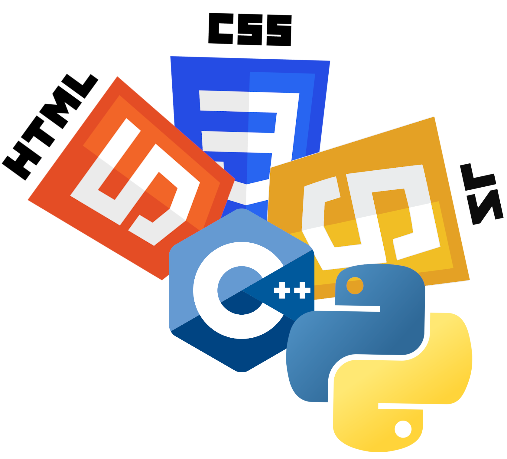

A partir de éste, se dio pie para evolucionar el lenguaje de programación C. Fue en los mismos laboratorios de AT&T Bell, que Bjarnes Stroutstrup diseñó y desarrolló C++ buscando un lenguaje con las opciones de programación orientada a objetos. Ahora el desarrollo del estándar de C++ acaparaba la atención de los diseñadores. En el año 1995, se incluyeron algunas bibliotecas de funciones al lenguaje C. Y con base en ellas, se pudo en 1998 definir el estándar de C++.
Algunas personas podrían pensar que entonces C++ desplazó a C, y en algunos aspectos podría ser cierto, pero también es cierto que algunas soluciones a problemas requieren de la estructura simple de C más que la de C++, C generalmente es usado por comodidad para escribir controladores de dispositivos y para programas de computadoras con recursos limitados.
La base del lenguaje fue creada por programadores y para programadores, a diferencia de otros lenguajes como Basic o Cobol que fueron creados para que los usuarios resolvieran pequeños problemas de sus ordenadores y el segundo para que los no programadores pudiesen entender partes del programa.
C++ es un lenguaje de nivel medio pero no porque sea menos potente que otro, sino porque combina la programación estructurada de los lenguajes de alto nivel con la flexibilidad del ensamblador. La siguiente tabla muestra el lugar del lenguaje respecto a otros.
C++ es un lenguaje de programación diseñado en 1979 por Bjarne Stroustrup. La intención de su creación fue extender al lenguaje de programación C y añadir mecanismos que permiten la manipulación de objetos. En ese sentido, desde el punto de vista de los lenguajes orientados a objetos, C++ es un lenguaje híbrido.
Posteriormente se añadieron facilidades de programación genérica, que se sumaron a los paradigmas de programación estructurada y programación orientada a objetos. Por esto se suele decir que el C++ es un lenguaje de programación multiparadigma.
Actualmente existe un estándar, denominado ISO C++, al que se han adherido la mayoría de los fabricantes de compiladores más modernos. Existen también algunos intérpretes, tales como ROOT.
El nombre "C++" fue propuesto por Rick Mascitti en el año 1983, cuando el lenguaje fue utilizado por primera vez fuera de un laboratorio científico. Antes se había usado el nombre "C con clases". En C++, la expresión "C++" significa "incremento de C" y se refiere a que C++ es una extensión de C.
Cuando nos planteamos la resolución de problemas mediante computador lo más usual es que queramos tratar con datos que son variables y cuantificables, es decir, que toman un conjunto de valores distintos entre un conjunto de valores posibles, además de poder almacenar los valores de estos datos en alguna forma aceptable para el computador (ya sea en la memoria o en periféricos de almacenamiento externo).
En un lenguaje de programación el concepto de tipo de datos se refiere al conjunto de valores que puede tomar una variable. Esta idea es similar a la que se emplea en matemáticas, donde clasificamos las variables en función de determinadas características, distinguiendo entre números enteros, reales o complejos. Sin embargo, en matemáticas, nosotros somos capaces de diferenciar el tipo de las variables en función del contexto, pero para los compiladores esto resulta mucho más difícil. Por este motivo debemos declarar explícitamente cada variable como perteneciente a un tipo. Este mecanismo es útil para que el computador almacene la variable de la forma más adecuada, además de permitir verificar que tipo de operaciones se pueden realizar con ella.
Como ya hemos dicho con los datos de un tipo podemos realizar determinadas operaciones pero, ¿cómo las expresamos en un lenguaje de programación? Para resolver este problema aparecen lo que llamamos operadores. Podemos decir que un operador es un símbolo o conjunto de símbolos que representa la aplicación de una función sobre unos operandos. Cuando hablamos de los operandos no sólo nos referimos a variables, sino que hablamos de cualquier elemento susceptible de ser evaluado en alguna forma. Por ejemplo, si definimos una variable entera podremos aplicarle operadores aritméticos (+, -, *, /), de asignación (=) o relacionales (> , &gl , …), si definimos una variable compuesta podremos aplicarle un operador de campo que determine a cual de sus componentes queremos acceder, si definimos un tipo de datos podemos aplicarle un operador que nos diga cual es el tamaño de su representación en memoria, etc.
Los operadores están directamente relacionados con los tipos de datos, puesto que se definen en función del tipo de operandos que aceptan y el tipo del valor que devuelven. En algunos casos es fácil olvidar esto, ya que llamamos igual a operadores que realizan operaciones distintas en función de los valores a los que se apliquen, por ejemplo, la división de enteros no es igual que la de reales, ya que la primera retorna un valor entero y se olvida del resto, mientras que la otra devuelve un real, que tiene decimales.
Podemos definir un algoritmo de manera general como un conjunto de operaciones o reglas bien definidas que, aplicadas a un problema, lo resuelven en un número finito de pasos. Si nos referimos sólo a la informática podemos dar la siguiente definición: Un procedimiento es una secuencia de instrucciones que pueden realizarse mecánicamente. Un procedimiento que siempre termina se llama algoritmo.
Al diseñar algoritmos que resuelvan problemas complejos debemos emplear algún método de diseño, la aproximación más sencilla es la del diseño descendente (top-down). El método consiste en ir descomponiendo un problema en otros más sencillos (subproblemas) hasta llegar a una secuencia de instrucciones que se pueda expresar en un lenguaje de alto nivel. Lo que haremos será definir una serie de acciones complejas y dividiremos cada una en otras más simples. Para controlar el orden en que se van desarrollando las acciones, utilizaremos las estructuras de control, que pueden ser de distintos tipos:
En el punto anterior hemos definido los algoritmos como procedimientos que siempre terminan, y procedimiento como una secuencia de instrucciones que pueden realizarse mecánicamente, aquí consideraremos que un procedimiento es un algoritmo que recibe unos parámetros de entrada, y una función un procedimiento que, además de recibir unos parámetros, devuelve un valor de un tipo concreto. En lo que sigue emplearé los términos procedimiento y función indistintamente.
Lo más importante de estas abstracciones es saber como se pasan los parámetros, ya que según el mecanismo que se emplee se podrá o no modificar sus valores. Si los parámetros se pasan por valor, el procedimiento recibe una copia del valor que tiene la variable parámetro y por lo tanto no puede modificarla, sin embargo, si el parámetro se pasa por referencia, el procedimiento recibe una referencia a la variable que se le pasa como parámetro, no el valor que contiene, por lo que cualquier consulta o cambio que se haga al parámetro afectará directamente a la variable.
¿Por qué surgieron los procedimientos y las funciones? Sabemos que un programa según el paradigma clásico es una colección de algoritmos pero, si los escribiéramos todos seguidos, nuestro programa sería ilegible. Los procedimientos son un método para ordenar estos algoritmos de alguna manera, separando las tareas que realiza un programa. El hecho de escribir los algoritmos de manera independiente nos ayuda a aplicar el diseño descendente; podemos expresar cada subproblema como un procedimiento distinto, viendo en el programa cual ha sido el refinamiento realizado. Además algunos procedimientos se podrán reutilizar en problemas distintos.
Por último indicaremos que el concepto de procedimiento introduce un nivel de abstracción importante en la programación ya que, si queremos utilizar un procedimiento ya implementado para resolver un problema, sólo necesitamos saber cuáles son sus parámetros y cuál es el resultado que devuelve. De esta manera podemos mejorar o cambiar un procedimiento sin afectar a nuestro programa, siempre y cuando no cambie sus parámetros, haciendo mucho más fácil la verificación de los programas, ya que cuando sabemos que un procedimiento funciona correctamente no nos debemos volver a preocupar por él.
En los puntos anteriores hemos tratado las variables como algo que tiene un tipo y puede ser pasado como parámetro pero no hemos hablado de cómo o dónde se declaran, de cómo se almacenan en memoria o de si son accesibles desde cualquier punto de nuestro programa. Podemos decir que un programa está compuesto por distintos bloques, uno de los cuales será el principal y que contendrá el procedimiento que será llamado al comenzar la ejecución del programa. Serán bloques el interior de las funciones, el interior de las estructuras de control, etc.
Diremos que el campo o ámbito de un identificador es el bloque en el que ha sido definido. Si el bloque contiene otros bloques también en estos el identificador será válido. Cuando hablo de identificador me refiero a su sentido más amplio: variables, constantes, funciones, tipos, etc. Fuera del ámbito de su definición ningún identificador tiene validez.
Clasificaremos las variables en función de su ámbito de definición en globales y locales. Dentro de un bloque una variable es local si ha sido definida en el interior del mismo, y es global si se ha definido fuera de el bloque pero podemos acceder a ella.
Como es lógico las variables ocupan memoria pero, como sólo son necesarias en el interior de los bloques donde se definen, durante la ejecución del programa serán creadas al entrar en su ámbito y eliminadas al salir de él. Así, habrá variables que existirán durante todo el programa (si son globales para todos los bloques) y otras que sólo existan en momentos muy concretos. Este mecanismo de creación y destrucción de variables permite que los programas aprovechen al máximo la memoria que les ha sido asignada.
Todo lo dicho anteriormente es válido para las variables declaradas estáticamente, pero existe otro tipo de variables cuya existencia es controlada por el programador, las denominadas variables dinámicas. Ya hablamos anteriormente de los punteros y dijimos entonces que eran las variables empleadas para apuntar a otras variables, pero ¿a qué nos referimos con apuntar? Sabemos que las variables se almacenan en memoria, luego habrá alguna dirección de memoria en la que encontremos su valor (que puede ocupar uno o varios bytes). Los punteros no son más que variables cuyo contenido es una dirección de memoria, que puede ser la de la posición del valor de otra variable.
 inicio
inicio HTML
HTML CSS
CSS Javascript
Javascript Python
Python